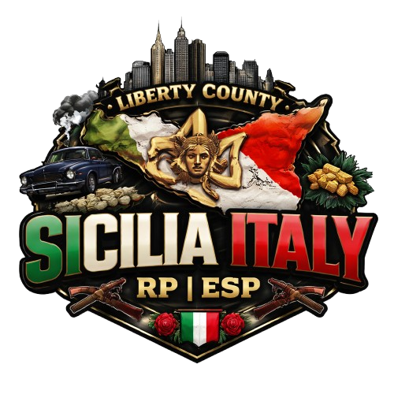
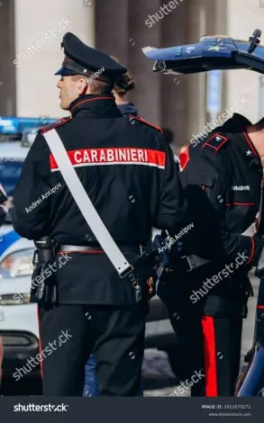
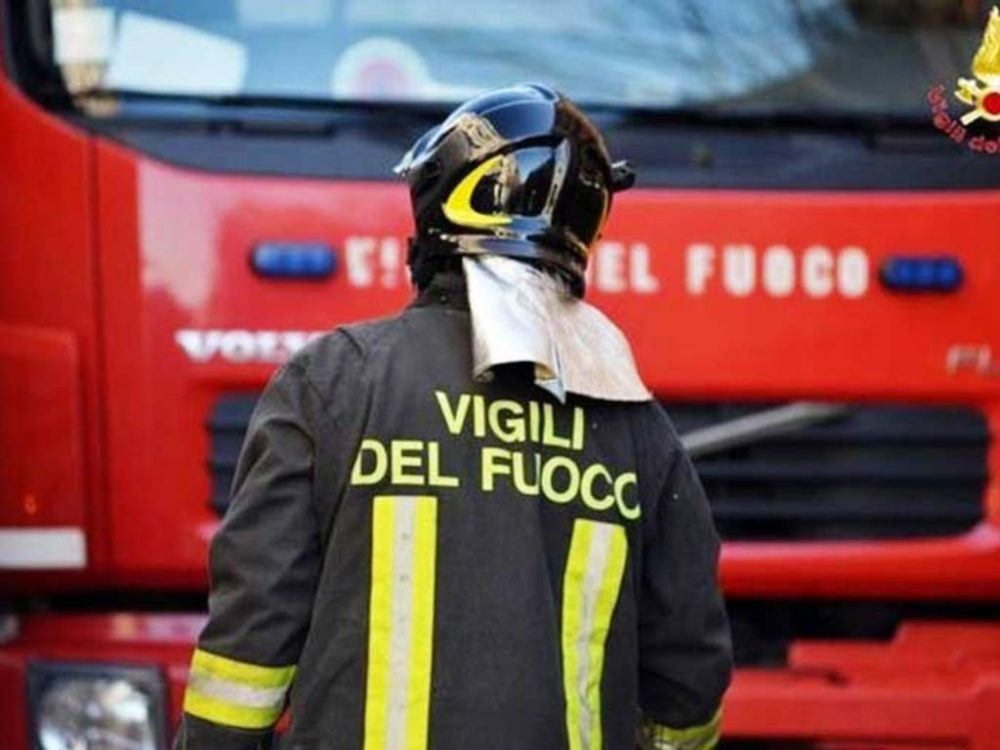

SICILIA ITALY RP
Viví una experiencia de rol seria, inmersiva y cinematográfica inspirada en Italia, con facciones organizadas, ambientación cuidada y una comunidad en crecimiento.
Fundado y dirigido por Kyoroto
HISTORIA DEL SERVIDOR
Sicilia Italy RP es una comunidad enfocada en ofrecer una experiencia de rol seria, inmersiva y organizada. Nuestro objetivo es recrear el ambiente de Italia dentro del rol, con facciones trabajadas, buena ambientación y una comunidad comprometida.
Buscamos que cada situación dentro del servidor se sienta intensa, realista y bien estructurada, dando lugar a historias memorables y un entorno de calidad para todos los jugadores.
FACCIONES

Carabinieri
Los Carabinieri (formalmente Arma dei Carabinieri) son una de las principales fuerzas de seguridad de Italia, funcionando como un cuerpo de gendarmería militarizada. Dependen del Ministerio de Defensa para tareas militares y del Ministerio del Interior para el orden público, operando en todo el país tanto en áreas urbanas como rurales.
Funciones principales: orden público, policía militar, investigaciones delictivas, patrullaje urbano y rural, y tareas de seguridad en distintos entornos.
Entrar al Discord de CarabinieriPolizia
Dentro de esta facción se encuentran la Polizia Locale y la Polizia di Stato. Cumplen un papel clave en la seguridad, el patrullaje, el control urbano y la respuesta ante distintas situaciones dentro de la ciudad.
Son una parte esencial del servidor para mantener el orden, intervenir en hechos delictivos y dar vida al rol institucional dentro de Sicilia Italy RP.
Entrar al Discord de Polizia
Vigili del Fuoco & Servizio Sanitario 118
Esta facción reúne a los servicios de emergencia encargados de asistir en incendios, accidentes, rescates y atención médica. Su presencia es clave para dar realismo y profundidad a cada escena dentro del servidor.
Tanto Vigili del Fuoco como el Servizio Sanitario 118 aportan profesionalismo, respuesta rápida y situaciones de alto valor para el rol.
Entrar al Discord de EmergenciasSTAFF
Kyoroto
Fundador y responsable principal de Sicilia Italy RP, encargado de la dirección general del proyecto, su identidad y el crecimiento de la comunidad.